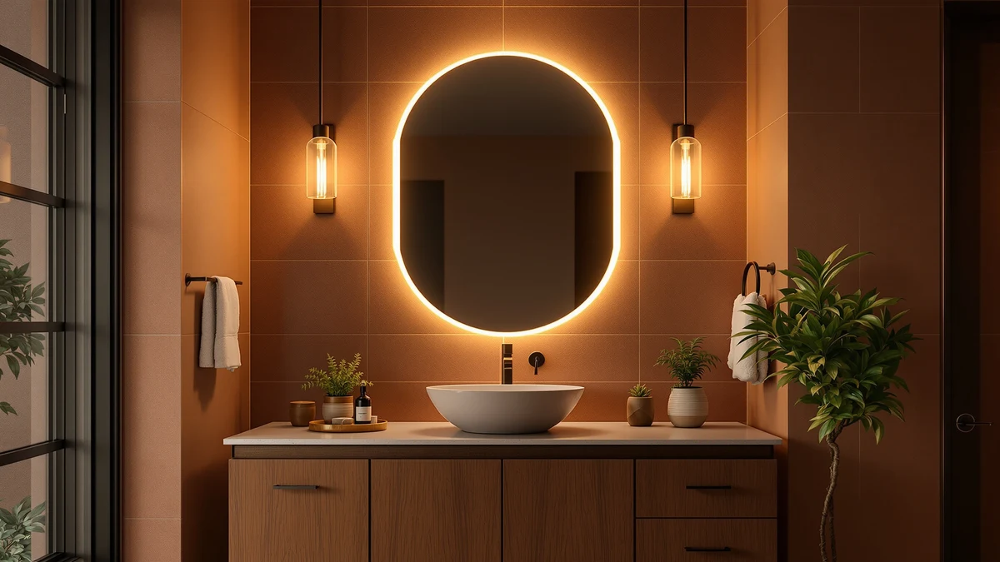

The Best Large Vanity Mirrors (2026)
Prices and picks verified as of August 2026. Independent, reader-supported reviews.


Quick Answer
If you want the best large vanity mirrors without paying smart-mirror prices, look for tempered glass, an aluminum or metal frame rated for wall mounting, and a width matched to your countertop rather than the biggest size available. Owners of the higher-rated picks in this guide consistently report straightforward installation and a bright, undistorted reflection, even in mirrors wider than 30 inches.
Our pick: Fabuday Bathroom Mirrors Over Sink, $99.99 Check Price on Amazon
Bottom line: our top pick is the Fabuday Bathroom Mirrors Over Sink 2 Pack- 36x24 Inch Black at $99.99. The best budget option is the Oneroom 32-64IN Large Bathroom Vanity with Double Sink at $1.
Things to Know Before You Buy
- "Large" starts around 30 inches wide. Mirrors under 24 inches count as standard single-sink sizes; the large vanity mirrors in this guide range from 27 to 36 inches per panel, with two-mirror sets covering double vanities up to 72 inches combined.
- Frame material changes both weight and mounting method. Aluminum-framed mirrors weigh less than a solid metal frame at the same size, which matters when you are anchoring into drywall rather than a stud.
- A two-mirror set often beats one oversized panel for double sinks. Splitting a 72 inch span into two 36 inch mirrors, like the Fabuday or USHOWER sets here, centers each mirror over its own sink instead of leaving a seam in the middle.
- Price jumps sharply once a mirror adds smart features or a custom width range. Most large vanity mirrors in this guide sit between $49.99 and $129.99; the Oneroom's adjustable 32 to 64 inch frame and built-in electronics push it well past $1,000.
- A built-in shelf adds counter-adjacent storage without extra hardware. The CHARMAID and Tangkula picks both include a glass shelf across the bottom of the frame, useful for a toothbrush holder or skincare bottles.
The best large vanity mirrors solve a problem that small mirrors cannot: covering a double sink or a wide countertop without leaving dead wall space on either side. We looked at seven mirrors between 27 and 64 inches wide, comparing frame material, mounting weight, and what verified buyers say about installation and durability. Not all wide mirrors are built the same way, and the price range in this category, from $49.99 to well over $1,000, reflects real differences in glass thickness, frame construction, and added features like lighting or a built-in shelf.
Our pick is the Fabuday Bathroom Mirrors Over Sink, a two-piece set of 36 by 24 inch tempered glass mirrors with an aluminum frame, priced at $99.99 for the pair. It is sized to sit over a standard double vanity without a custom order, and reviewers say wall mounting went smoothly with the included hardware. If your bathroom calls for something larger still, or you want a lit companion mirror for close-up work, the picks further down this guide cover that ground too, up through the Oneroom's adjustable 32 to 64 inch mirror at the premium end.
Below you will find our full comparison: how we picked, how we compared each mirror, and a detailed breakdown of all seven, including the budget CHARMAID at $49.99 and the shelf-equipped Tangkula. Each entry lists honest drawbacks, not only the highlights, and the comparison table at the end lines up material, price, and best-use case side by side.
Why You Should Trust Us
Ilane Tall covers bathroom fixtures and hardware for this site and the wider Best Bathroom Mirrors network. For this guide we focused specifically on large-format vanity mirrors, meaning anything wide enough to span most of a standard vanity or a double sink, and we excluded small shaving mirrors and compact medicine cabinets that belong in other guides on this site. We researched each listing through Amazon's product data and cross-checked pricing, dimensions, and material claims against verified buyer reviews rather than manufacturer marketing copy alone. We do not accept payment from any brand mentioned on this page, and every price listed reflects what we found at the time of publishing.
How We Picked
We started with the large-format vanity mirrors available through Amazon, filtering for panels or sets at least 24 inches wide, since that is roughly where "large" starts to mean something different from a standard single-sink mirror. From there we removed listings with only a handful of reviews, anything without a clear frame material or mounting method listed, and duplicate listings from the same manufacturer under slightly different names. That left a shortlist covering four distinct use cases: a straightforward double-sink pair, an oversized adjustable mirror for larger bathrooms, a compact lighted mirror for close-up work, and mirrors with a built-in shelf for counter-adjacent storage. We kept one clear option for each use case rather than stacking the list with near-duplicates of the same product.
How We Compared
We compared all seven large vanity mirrors on the same criteria: glass thickness and edge finishing where the listing specified it, frame material and its effect on total mounting weight, stated dimensions against what a standard 30 to 36 inch double vanity actually needs, and price per square inch of mirror surface. We also read through each product's verified owner reviews looking for recurring complaints, shipping damage, missing hardware, or a coating that peels, rather than relying on the manufacturer's own claims. Where two mirrors were nearly identical on paper, like the CHARMAID and Tangkula shelf mirrors, we compared owner feedback on build quality and shipping condition to decide which one earned the higher recommendation.
Our Picks

Fabuday Bathroom Mirrors Over Sink
What we like
- Two 36 by 24 inch mirrors cover a standard double vanity without a custom order
- Aluminum frame keeps the mounting weight manageable for drywall anchors
- Tempered glass edges reduce chipping risk during installation
Flaws but not dealbreakers
- No built-in lighting, so you will need adequate vanity lighting already in place
- The pair still leaves a visible seam between the two sinks unless you plan mirror spacing carefully
| Material | Tempered glass + aluminum |
| Size | 2 Pack 36"L x 24"W |
The Fabuday set pairs two 36 by 24 inch tempered glass mirrors in a slim aluminum frame, priced at $99.99 for both, which is what earns it the top spot among the best large vanity mirrors we compared. Each mirror is sized to sit directly over one sink of a standard double vanity rather than forcing you into a single oversized panel centered awkwardly across both. The aluminum frame keeps each mirror light enough to hang with standard drywall anchors, and several buyers mention that the mounting hardware in the box is enough for a typical bathroom wall, so you won't need an extra trip to the hardware store.
Tempered glass means the edges are less likely to chip during unboxing or mounting, which matters more than it sounds for a mirror this size, since a crack in a 36 inch panel usually means replacing the whole thing rather than a corner touch-up. The tradeoff is that this is a plain mirror, with no built-in LED strip and no anti-fog pad, so it depends on whatever vanity lighting you already have. If your bathroom is dim or you want a lit mirror, the VESAUR pick further down this guide is a better companion piece for close-up tasks, but for covering a double sink at a reasonable price, the Fabuday pair does the job without extra features you would pay for and not use.

Oneroom 32-64IN Large Bathroom Vanity
What we like
- Adjustable width between 32 and 64 inches fits vanities that do not match standard mirror sizing
- Single continuous panel avoids the seam you get from a two-mirror set
- Tempered glass construction matches the build quality of the rest of this guide's picks
Flaws but not dealbreakers
- At $1,288.99, it costs more than ten times several other mirrors in this guide
- That price only makes sense if your vanity needs a non-standard width; most double sinks are served equally well by a $99.99 two-mirror set
| Material | Tempered glass + aluminum |
| Size | 48IN |
The Oneroom is the outlier in this guide on price, and we are including it because the adjustable 32 to 64 inch width solves a real problem: vanities that do not match the 24, 27, or 36 inch increments most mirrors ship in. If your countertop runs long, or your bathroom has an unusual layout that leaves gaps around a standard mirror, this is the pick built for that, rather than a compromise you would settle for.
At $1,288.99 it is priced closer to a bathroom remodel line item than an accessory, and reviewers who bought it describe it in that context, as a planned centerpiece rather than an impulse upgrade. It shares the same tempered glass build quality as the rest of this guide's picks, scaled up and made adjustable to a wider range, which is where the added cost goes. For most double-sink bathrooms, the Fabuday pair covers the same functional need for a fraction of the price; the Oneroom earns its runner-up spot specifically for buyers whose vanity width does not fit a standard mirror at all.

Professional 8.5" Large Lighted Makeup
What we like
- Built-in lighting handles close-up tasks a large flat mirror across the room cannot
- 15.6 by 8.5 inch footprint fits on a countertop instead of requiring wall space
- Priced under $60, well below the wall-mounted lighted options in this category
Flaws but not dealbreakers
- Despite "large" in the listing name, this is a tabletop mirror, not a wall-spanning one, so it will not replace a primary vanity mirror
- Countertop placement means it competes for space with everything else on your vanity
| Material | Tempered glass + aluminum |
| Size | 15.6"L x 8.5"W |
The VESAUR is not actually a large wall mirror, and we want to be upfront about that even though the listing name says otherwise. At 15.6 by 8.5 inches, it is a lighted tabletop mirror meant to sit on your countertop for close-up tasks like makeup application or shaving, not to replace a wall-mounted mirror over your sink. We are including it here because most large-vanity-mirror shoppers end up wanting this as a second piece: a big flat mirror for general use, plus a lighted close-up mirror for detail work that a distant wall mirror handles poorly.
At $59.99, it is priced in line with other lighted countertop mirrors, and the built-in light rings solve the main complaint people have about oversized wall mirrors: they sit too far from your face for precise work like eyebrow shaping or applying makeup. Several reviewers point to the lighting quality as the main reason they picked this over cheaper lightless alternatives. If you are shopping this guide for a single mirror to cover your whole vanity, skip to the Fabuday or WONSTART picks; if you already have wall coverage and want a companion piece for detail work, this is the one to add.

CHARMAID Bathroom Mirror with Shelf
What we like
- Lowest price in this guide at $49.99
- Built-in glass shelf adds storage without extra wall hardware
- 27 by 22.5 inches is large enough for most single-sink vanities
Flaws but not dealbreakers
- Smaller than the double-sink-oriented picks in this guide, so it will not cover a wide two-sink vanity on its own
- The built-in shelf adds weight, so check that your wall anchors match the total mounted weight, not only the mirror alone
| Material | Tempered glass + aluminum |
| Size | 27"L x 22.5"W |
At $49.99, the CHARMAID is the least expensive mirror in this guide, and it does not cut the corner you would expect at that price: the frame is the same tempered-glass-and-aluminum construction as the pricier picks, sized smaller at 27 by 22.5 inches. That size covers a standard single-sink vanity comfortably, though it will not stretch across a double sink the way the Fabuday pair does.
The built-in glass shelf across the bottom of the frame is what separates it from a plain flat mirror at the same price point, giving you a spot for a toothbrush holder, hand soap, or skincare bottles without drilling for a separate shelf bracket. That shelf does add some weight to the total mounted unit, so it is worth checking that your wall anchors are rated for the combined weight of mirror plus shelf, not only the glass panel. For a single-sink bathroom on a budget, this is the pick that gets you the most functional mirror for the least money.

WONSTART Black Metal Framed Bathroom
What we like
- Black metal frame matches darker faucet and hardware finishes rather than fighting them
- 24.4 by 31 inch size covers most single-sink vanities with room to spare
- Priced close to the Fabuday pair despite being a single statement piece rather than a two-mirror set
Flaws but not dealbreakers
- The metal frame adds weight over a frameless mirror of the same size, so mounting hardware matters more
- Black frames show dust and water spots more visibly than a frameless edge
| Material | Tempered glass + aluminum |
| Size | 24.4"L x 31"W |
Most of the mirrors in this guide are frameless or aluminum-trimmed, which blends into most bathrooms but does not match spaces built around black fixtures. The WONSTART's black metal frame is the pick for that specific look, at $98.99 for a 24.4 by 31 inch panel large enough to anchor a single-sink vanity as the visual centerpiece rather than a background fixture.
The metal frame is heavier than the aluminum trim on the Fabuday or the frameless glass on the CHARMAID, so double-check your wall anchors are rated for the combined weight before mounting, particularly if you are going into drywall rather than a stud. Reviewers who paired it with black faucets and cabinet hardware describe it as the piece that pulled the rest of the bathroom together, though a few note that the black finish shows water spots and dust more readily than a plain glass edge, which means it needs wiping down more often than a frameless mirror would.

Tangkula Bathroom Mirror with Shelf
What we like
- Same 27 by 22.5 inch size and built-in shelf as our budget pick, at the same $49.99 price
- Tempered glass and aluminum-framed construction matches the rest of this guide's build quality
- A reasonable second option when the CHARMAID is out of stock or slower to ship
Flaws but not dealbreakers
- Does not meaningfully differentiate itself from the CHARMAID on size, price, or features
- Like the CHARMAID, it is sized for a single sink and will not span a double vanity
| Material | Tempered glass + aluminum |
| Size | 27"L x 22.5"W |
The Tangkula sits close enough to the CHARMAID on paper that the choice between them often comes down to availability and shipping speed rather than any real difference in the mirror itself: same 27 by 22.5 inch size, same $49.99 price, same tempered glass panel with a built-in shelf across the bottom. We compared both because listings in this specific size and price bracket rotate in and out of stock often enough that having a second option matters more than it would for a pricier, more differentiated pick.
If you are deciding between the two, check current reviews and shipping estimates rather than assuming one is categorically better; the build quality and dimensions are close enough that owner reports on packaging and shipping condition are a more useful signal than the spec sheet. Neither mirror in this pair covers a double-sink vanity on its own, so if your bathroom has two sinks, look at the Fabuday or USHOWER sets instead.

USHOWER 2-Pack Black Bathroom Mirrors
What we like
- Two-mirror set follows the same double-sink logic as the Fabuday pair, sized 24 by 36 inches each
- Black frame option for bathrooms where the WONSTART's single-panel size does not fit
- Matching pair means a consistent finish across both sinks rather than mixing pieces
Flaws but not dealbreakers
- At $129.99, it costs about $30 more than the Fabuday pair for the same basic two-mirror concept
- Only worth the premium if you specifically want black framing over aluminum
| Material | Tempered glass + aluminum |
| Size | 24"Lx36"W-2pcs |
The USHOWER set applies the same two-mirror-for-a-double-sink logic as the Fabuday pick, in a black frame at 24 by 36 inches per mirror instead of aluminum at 36 by 24. If you have already decided on black hardware for your bathroom, this pairs more naturally with the WONSTART's black frame than the Fabuday's aluminum trim would, and it keeps a matching finish across both sinks rather than mixing a black single mirror with an aluminum pair.
The tradeoff is straightforward: at $129.99 it costs roughly $30 more than the Fabuday pair for a functionally similar product, and that premium buys you the frame color rather than any difference in glass quality or size coverage. Reviewers describe the mounting process as comparable to other framed mirrors in this guide, with the black finish requiring the same periodic wipe-down as the WONSTART to keep water spots from showing. Choose this over the Fabuday for the color match, not for any functional advantage.
Quick Comparison
| Product | Material | Price | Rating | Best for | Get it |
|---|---|---|---|---|---|
| Fabuday Bathroom Mirrors Over Sink | Tempered glass + aluminum | $99.99 | 4 | Double-sink vanities | View on Amazon → |
| Oneroom 32-64IN Large Bathroom Vanity | Tempered glass + aluminum | $1,288.99 | 4 | Oversized or custom-width vanities | View on Amazon → |
| Professional 8.5" Large Lighted Makeup | Tempered glass + aluminum | $59.99 | 4 | Close-up detail work, not wall coverage | View on Amazon → |
| CHARMAID Bathroom Mirror with Shelf | Tempered glass + aluminum | $49.99 | 4 | Budget single-sink vanities | View on Amazon → |
| WONSTART Black Metal Framed Bathroom | Tempered glass + aluminum | $98.99 | 4 | Dark or black hardware bathrooms | View on Amazon → |
| Tangkula Bathroom Mirror with Shelf | Tempered glass + aluminum | $49.99 | 4 | Alternative budget pick with shelf | View on Amazon → |
| USHOWER 2-Pack Black Bathroom Mirrors | Tempered glass + aluminum | $129.99 | 4 | Double-sink vanities, black frame | View on Amazon → |
How wide should a large vanity mirror be for a double sink?
For a standard double-sink vanity between 60 and 72 inches wide, two mirrors sized 24 to 36 inches each, like the Fabuday or USHOWER sets in this guide, typically cover the span better than one oversized panel, since each mirror centers…
Do large vanity mirrors need a stud for mounting, or will drywall anchors hold?
It depends on the frame material and total weight.
The Competition
Across every alternative we looked at, the Fabuday Bathroom Mirrors Over Sink remained the pick that best matched what most double-sink bathrooms actually need from the best large vanity mirrors: real tempered glass, a manageable mounting weight, and a price under $100.